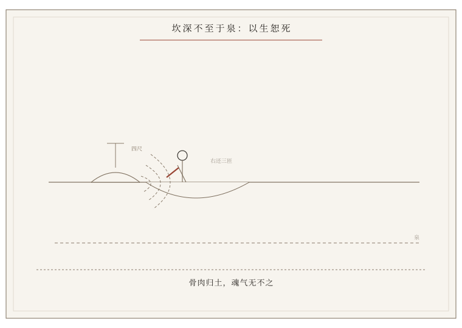

檀弓下 · 四·七十五 · 第 400 课
延陵季子适齐，于其反也，其长子死，葬于赢、博之间。孔子曰：「延陵季子，吴之习于礼者也。」往而观其葬焉。其坎深不至于泉，其敛以时服，既葬而封，广轮揜坎，其高可隐也。既封，左袒，右还其封且号者三。曰：「骨肉归复于土，命也。若魂气则无不之也，无不之也。」而遂行。孔子曰：「延陵季子之于礼也，其合矣乎。」
说什么事：延陵季子到齐国去，返回时，长子死了，葬在赢、博之间。孔子说：延陵季子是吴国熟习于礼的人。便前往观他的葬事。他挖的坎深不到泉水；敛衣用当时所服的衣，不改制；既葬而封坟，坟的大小正好掩住坎，其高可凭手按着。既封之后，袒露左臂，绕着坟向右转三圈，并且哭号三次，说：「骨肉归复于土，这是命。至于魂气，则无所不往，无所不往。」说完就走。孔子说：延陵季子之于礼，是合的罢。
落在哪一层：以「节」为界。此章所示者，全是「减」：减深、减衣、减封、减哭。
为何编在此位：上节两支闸论「不许过」，此节一整场葬示「如何不过」。一为禁忌，一为范本。
【经】延陵季子适齐，于其反也，其长子死，葬于赢、博之间。孔子曰：「延陵季子，吴之习于礼者也。」往而观其葬焉。其坎深不至于泉，其敛以时服，既葬而封，广轮揜坎，其高可隐也。既封，左袒，右还其封且号者三。曰：「骨肉归复于土，命也。若魂气则无不之也，无不之也。」而遂行。孔子曰：「延陵季子之于礼也，其合矣乎。」
【注】季子名札，鲁昭二十七年，「吴公子札聘于上国」是也。季子让国居延陵，因号焉。赢、博，齐地，今泰山县是也。／往吊之。／以生恕死。／以时行之服，不改制节。／示节也。轮，从也。隐，据也。封可手据，谓高四尺。／还，围也。号，哭且言也。命犹性也。／行，去也。
【疏】此一节论仲尼云季子得礼之事。○注「以生恕死」。○正义曰：言坎以深不至泉，以生时不欲近泉，故死亦不至于泉，以生时之意，以恕于死者。○注「亦节」至「尺所」。○正义曰：以上敛以行时之服，不更制造，是其节也。今封坟广轮揜坎，其高可隐，又是有其节制，故云「亦节」也。云「谓高四尺所」者，言坟之高可四尺之所，以人长八尺，低而据之，半为四尺。◎既封坟已竟，季子乃左袒其衣。案郑注《觐礼》云：「凡以礼事者左袒，若请罪待刑则右袒。」故《觐礼》云「乃右肉袒于庙门之东」，在丧亦是礼事，故《丧礼》直云「袒」。今季子长子之丧而左袒者，季子达死生之命，云骨肉归复于土，不须哀戚，以自宽慰，故从吉礼也。左袒讫，乃右而围绕其封，兼且号哭，而绕坟三匝也。○号哭且言，曰：骨肉归复于土，此是命也。命，性也。言自然之性，当归复于土。言「归复」者，言人之骨肉，由食土物而生，今还入土，故云「归复」。若神魂之气，则游于地上，故云「则无不之適也」。再言之者，愍伤离决之意。
适 往。
反 同「返」。
赢、博 齐地，在今泰山一带。
坎 墓穴。
不至于泉 不到地下泉水。
时服 当时所服之衣，不改制新衣。
封 坟堆。
广轮 广，横；轮，从。指坟的长宽。
揜坎 掩过墓穴。
可隐 可凭手按，注云「高四尺」。
左袒 袒露左臂。
右还 向右环绕。还，围也。
号者三 哭号三次，一说绕三匝。
骨肉归复于土 身体还归土中。
魂气无不之 魂气无所不往。
遂行 随即离去。
合 合于节。
延陵季子到齐国去，返回时，他的长子死了，葬在赢、博之间。孔子说：「延陵季子是吴国熟习礼的人。」便去观看他的葬礼。他的墓穴深不到泉；他的敛衣用当时所穿的衣，不改制；既葬之后堆坟，坟的长宽正好掩过墓穴，其高可以手按。既封之后，袒露左臂，绕坟向右转，并且哭号三次，说：「骨肉归还于土，这是命。至于魂气，则无所不往，无所不往。」说完就离去。孔子说：「延陵季子之于礼，真是合了罢。」
此章四「减」，一「言」，一「行」。
坎不至泉、敛以时服、封可隐、号三而止——四者皆减。
一言：骨肉归土，魂气无之。一行：遂去。
孔子一评：「其合矣乎」。
第一层 这四减都不是省事 坎不至泉，注云「以生恕死」——不是挖不动，是以生者之不愿近泉，推及死者。
礼之省，背后皆有「以生恕死」四字。 减不是图便，是推己。
第二层 「敛以时服」 注云「以时行之服，不改制节」，疏云「不更制造，是其节」。
不为死者新制一衣，用他当时所服的。 此一条，直抵后世「厚敛」之风。
第三层 「其高可隐」 注云「封可手据，谓高四尺」；疏云人长八尺，低而据之，半为四尺。
坟的高度，以「人的手能够到」为准。 礼用身体做尺度，不用规格做尺度。
第四层 「左袒」的异例 疏云「凡以礼事者左袒，若请罪待刑则右袒」；丧礼只言「袒」，不言左右。
季子左袒，是从吉礼之容。 疏点明其故：「季子达死生之命，不须哀戚，以自宽慰。」
第五层 这句话 「骨肉归复于土，命也。若魂气则无不之也。」
一半还给土，一半还给天。 前半是「命」，不可违；后半是「无不之」，不可拘。
礼家的生死观，两句话说完，不著一字议论。
第六层 「再言之」 疏云「再言之者，愍伤离决之意」。
重复不是啰唆，是礼对「决别」这一瞬的承认。 说一次是理，说两次是情。
第七层 「遂行」与孔子之评 号三、言毕，即走。
不守坟，不结庐，不留连。 孔子评以「其合矣乎」——「乎」字存疑，圣人亦不轻断。
与今日何干 今之葬，多求出「看得出孝顺」的形；此章所求，是「看不出多余」的合。
此章给一句：礼之极简，不是少做，是恰好。
| 左 | 右 |
|---|---|
| 坎不至泉 | 以生恕死 |
| 敛以时服 | 不改制 |
| 封揜坎 | 广轮相称 |
| 其高可隐 | 手可据，四尺 |
| 左袒 | 从吉礼之容 |
| 右还三号 | 绕坟三匝 |
| 骨肉归土 | 命也 |
| 魂气无不之 | 不可拘 |
| 遂行 | 不留连 |
画一幅极简的墓葬场景，视点略俯、断面可见。画面下三分之一画一条地平线，线下画一道浅缓的弧线为坎底，坎底之下再画一条疏虚线表示地泉，虚线与坎底之间留出大段空白。地平线之上画一座扁而低的坟，坟高只及常人半身，坟侧画一根短竖线并一道小横线，示其高处。坟前立一人形，一臂裸露、一臂垂，其身侧画三道弧线围坟，弧线首尾相接成环形。画面右侧留空。不画草木。不画文字。赭色只用在那只裸露的手臂上。
